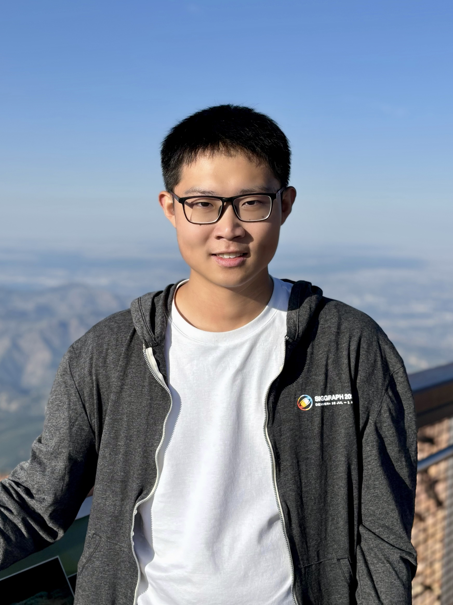

|
Hi! I am a second-year Computer Science Ph.D. candidate at NYU,
advised by
Prof. Qi Sun
in the
Immersive Computing Lab.
My research interests are at the intersection of deep learning and computer graphics,
focusing on 3D understanding, reconstruction, and generation.
Recently, I have been working on physics-informed monocular depth estimation,
pushing toward a better trade-off between size and accuracy in depth cameras.
My goal is to enable compact and power-efficient depth sensing for size-sensitive scenarios
such as AR glasses, small robotics, mobile devices, and wearable systems.
Prior to NYU, I received my Bachelor's degree with honors from
|
 |
|
|

|
Bingxuan Li*, Jiahao Wu*, Yuan Xu*, Zezheng Zhu, Yunxiang Zhang, Kenneth Chen, Yanqi Liang, Nanfang Yu†, Qi Sun† Paper ArXiv preprint We introduce a nanophotonic metalens that physically encodes metric depth into a single monocular image and enables depth foundation models to recover accurate scale through lightweight prompting and fine-tuning. |

|
Yuan Xu*, Bingxuan Li*, Jiahao Wu*, Yunxiang Zhang, Zezheng Zhu, Nanfang Yu, Qi Sun† Paper SIGGRAPH 2025 Emerging Technologies We built a metasurface-based depth camera and a neural decoder for accurate monocular metric depth estimation. The system was demonstrated at SIGGRAPH 2025. |
|
Yunxiang Zhang*, Bingxuan Li*, Alexandr Kuznetsov, Akshay Jindal, Stavros Diolatzis, Kenneth Chen. Anton Sochenov, Anton Kaplanyan, Qi Sun† Paper / Project / Code SIGGRAPH 2025 We present Image-GS, a content-adaptive neural image representation using anisotropic 2D Gaussians, offering high memory efficiency, fast random access, and flexible fidelity control for real-time graphics. |
|
|
Fujia Su*, Bingxuan Li*, Qingyang Yin, Yanchen Zhang, Sheng Li† Paper / Project / Code / Video ACM Transactions on Graphics (SIGGRAPH 2024) We propose a novel sampling method to handle challenging specular/glossy paths in bidirectional path tracing (BDPT), significantly improving rendering efficiency while ensuring unbiasedness. |
|
We present EasyRender, a scalable, high-performance ray tracing renderer built upon OptiX 8.0, featuring modular architecture, support for pbrt-v3 scenes and Disney Principled Materials, and implementations of advanced physically based rendering algorithms. |
|

|
This project explores the further applications of ROMA in rendering, implemented on Mitsuba 0.6. We primarily focused on enhancing the performance of ray tracing using ROMA, a novel acceleration method. |
|
Reviewer: SIGGRAPH Asia, TVCG |
|
I enjoy reading, gaming, photography and other nerdy stuffs outside of work. |